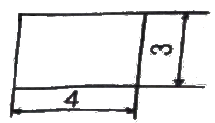
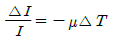
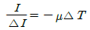
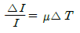
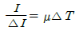
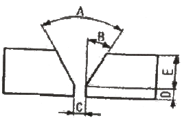

방사선비파괴검사산업기사(구) (2012-09-15 기출문제)
1과목: 방사선투과검사 시험
1. 방사선투과검사에서 시험체 콘트라스트에 영향을 주는 인자가 아닌 것은?
- 현상액의 강도
- 시험체의 두께 차
- 방사선의 선질
- 산란 방사선
(정답률: 알수없음)

2. 선원으로부터 거리가 2m 일 때 방사선의 강도가 10Ci라면, 5m 일 때의 선원의 강도는 얼마인가?
- 1.6Ci
- 2.5Ci
- 3.6Ci
- 25Ci
(정답률: 알수없음)
3. 전자쌍이 생성되려면 문턱에너지 값을 넘어야 한다. 이 값은 얼마인가?
- 0.51MeV
- 1.02MeV
- 톰슨에너지 이상
- 콤프톤에너지 이상
(정답률: 알수없음)
4. 방사선 투과검사에서 선명한 투과영상을 얻기 위한 조건으로 거리가 먼 것은?
- 선원 크기는 가능한 작을 것
- 선원의 조사방향은 필름면과 수직일 것
- 선원은 시험체와 필름으로부터 가능한 한 멀리 떨어질 것
- 선원 - 시험체간 거리 대비 시험체 - 필름간 거리의 비율을 가능한 한 크게 할 것
(정답률: 알수없음)
5. 방사선투과검사를 할 때, 불필요한 유해 엑스선을 줄이기 위하여 사용하는 기기가 아닌 것은?
- 산란체
- 조리개
- 콜리메터
- 필터
(정답률: 알수없음)
6. X선이나 γ선이 물질을 투과 할 때 에 관계되는 I/Io=e-μχ식의 설명으로 옳은 것은?
- I/Io는 흡수율로써 값이 클수록 흡수가 많이 된다.
- μ는 선흡수계수로서 “0.693/반가층”으로 표시할 수 있다.
- χ는 투과두께로서 “0.5/반가층”으로 표시할 수 있다.
- e는 상용대수의 밑이다.
(정답률: 알수없음)
7. X선 회절법에 대한 설명으로 틀린 것은?
- 결정 구조의 확인에 이용한다.
- Laue법은 다결정 시료만 사용할 수 있다.
- 실험실에서 화합물의 종류를 확인 하는데 사용한다.
- 냉간가공 및 어닐링이 금속에 미치는 영향을 조사한다.
(정답률: 알수없음)
8. 비파괴검사의 품질평가에 대한 적용 예에 대해 설명한 것으로 옳은 것은?
- 품질관리를 위한 관리한계로서 결함검사의 판정기준을 이용하는 것은 불가능하다.
- 규격이나 시방서에 근거하여 제조되고 규정된 품질인가 아닌가를 확인하기 위해 품질관리의 한 수단으로 비파괴검사를 실시한다.
- 품질관리의 관리한계는 주어진 설계기준하에서 사용되면 중대한 재해를 초래하는 파괴사고를 발생할 우려가 있다라는 판단을 기준으로 정해진다.
- 품질평가에서 합격한 구조물이 되려면 사용 개수 후 예측할 수 없는 여러 조건의 발생이 고려된 것으로 손상, 고장의 원인이 되는 여러 인자는 존재하지 않는 다.
(정답률: 알수없음)
9. 와전류의 특성을 설명한 것 중 틀린 것은?
- 와전류는 전도체 안에서만 존재한다.
- 와전류는 항상 연속적인 회로로 흐른다.
- 와전류는 교번 전자기 안에서만 존재한다.
- 와전류는 코일의 가장 가까운 표면에서 가장 약하다.
(정답률: 알수없음)
10. 다음 중 교류가 흐르는 코일을 전도체에 가까이 하면 코일 주위에 발생된 자계가 도체에 작용하여, 도체를 관통하는 자속의 변화를 방해하려는 기전력 변화를 이용한 비파괴검사법은?
- 전류관통법
- 직접통전법
- 와전류탐상시험법
- 자분탐상코일법
(정답률: 알수없음)
11. 다음 중 알루미늄 재료에 적용할 수 없는 비파괴검사법은?
- 침투탐상시험
- 자분탐상시험
- 초음파탐상시험
- 와전류탐상시험
(정답률: 알수없음)
12. 다음 중 방사선투과시험의 장점이 아닌 것은?
- 내부결함의 검출 용이
- 검사결과의 장기 기록 보관 가능
- 시험체 조성의 주요 변화에 대한 검출 가능
- 방사선 빔의 이동에 수직인 균열의 검출이 용이
(정답률: 알수없음)
13. 시험체의 대상 부위에 따른 비파괴검사법의 적용이 바르게 짝지어진 것은?
- 내부 : 방사선투과시험, 초음파탐상시험
- 전체적인 모니터링 : 자분탐상시험, 와전류탐상시험
- 표면 또는 표층부 : 자분탐상시험, 초음파탐상시험
- 시험체의 체적검사 : 초음파탐상시험, 침투탐상시험
(정답률: 알수없음)
14. 초음파탐상검사의 적용 예에 대한 설명으로 옳은 것은?
- 부식량의 측정에는 초음파 두께측정기가 이용되고 있다.
- 원자로에 사용된 연료봉의 변형량 측정에는 초음파 탐상검사가 이용되고 있다.
- 초음파탐상시험은 주대상이 기계나 구조물의 사고시 적용한다.
- 제작검사시의 적용은 재료 또는 기계부품의 변형량이나 부식량을 측정하고 사용 여부를 결정하기 위해 한다.
(정답률: 알수없음)
15. 용접 구조물의 품질 신뢰성이 보장될 수 있도록 침투탐상 시험이 옳게 구성한 제작 공정은?
- 침투탐상검사 - 용접 - 샌드블라스트 - 도장
- 용접 - 침투탐상검사 - 샌드블라스트 - 도장
- 용접 - 샌드블라스트 - 침투탐상검사 - 도장
- 용접 - 샌드블라스트 - 도장 - 침투탐상검사
(정답률: 알수없음)
16. 침투탐상검사의 특징을 설명한 것 중 옳은 것은?
- 표면에 닫혀 있는 결함만을 탐상할 수 있다.
- 주변 환경 특히 온도에 대하여 영향을 받지 않는 다.
- 표면이 거친 시험체나 다공성 재료를 쉽게 검사할 수 있다.
- 결함 폭의 확대율이 높기 때문에 미세한 결함도 쉽게 검출할 수 있다.
(정답률: 알수없음)
17. 다음 중 비파괴검사법의 종류에 해당되지 않는 것은?
- 누설시험
- 육안시험
- 충격시험
- 스트레인측정시험
(정답률: 알수없음)
18. 비파괴검사의 종류와 이에 따른 설명으로 틀린 것은?
- 초음파탐상시험은 시험체의 내부결함 검출에 적합하다.
- 자분탐상시험은 강자성체의 표층부 결함 검출에 적합하다.
- 누설시험은 시험체 내부 및 외부의 결함 검출에 적합하다.
- 방사선투과시험은 용접부 블로홀(blow hole) 등의 검출에 적합하다.
(정답률: 알수없음)
19. 재료의 자속밀도와 자력이 0(zero)에 근접하였을 때 자력에 대한 자속밀도의 비율을 무엇이라 하는가?
- 초기투자율
- 실효투자율
- 재료투자율
- 최대투자율
(정답률: 알수없음)
20. 빛의 간섭, 회절에 의해 생기는 무늬로부터 주로 면외(面外) 변위를 측정하는 것은?
- 홀로그래피법
- 모아레법
- 스파클법
- 광탄성피막법
(정답률: 알수없음)
2과목: 방사선투과검사 시험
21. 다음 중 연박 증감지를 사용하는데 적합한 경우는?
- ϓ선 투과검사
- 250kV의 X선 투과검사
- 400MV X선 투과검사
- 제로 방사선투과검사
(정답률: 알수없음)
22. 그림과 같은 형태의 표적을 가진 X선발생장치를 사용시 초점의 크기는 얼마인가?

- 3
- 3.5
- 4
- 5
(정답률: 알수없음)
23. 비듬 또는 담뱃재와 같은 외부 이물질이 연박스크린 표면에 존재할 경우 최종 방사선 투과사진에서는 어떻게 나타나는가?
- 밝게 나타난다.
- 어둡게 나타난다.
- 식별되지 않는다.
- 검은 선으로 나타난다.
(정답률: 알수없음)
24. X-선이 필름을 통과할 때 생성되는 자유전자들 때문에 영상이 선명하지 않게 되는 요인은?
- 고유불선명도
- 산란방사선
- 기하학적불선명도
- 필름의 입도
(정답률: 알수없음)
25. 방사선투과검사할 때 두꺼운 금속에 대하여는 연박증감지 또는 금속 형광증감지를 사용한다. 이 때 사용되는 금속 형광증감지에 대한 설명으로 틀린 것은?
- 선명도가 매우 좋다.
- 산란선을 방지하여 준다.
- 증감율이 10~60배 정도이다.
- 감광원은 형광 또는 2차 전자이다.
(정답률: 알수없음)
26. 두께 T의 판 중앙에 미소 두께 △T의 결함이 존재하는 시험체를 촬영하였다. 결함이 없는 곳을 투과한 방사선의 강도를 I, 결함이 존재하는 곳을 투과한 방사선의 강도를 I+△I 라 할 때 선형 흡수계수를 μ라 하면 이들 사이의 관계식을 바르게 나타낸 것은? (단, 산란선의 존재는 무시한다.)




(정답률: 알수없음)
27. 감광유제가 X선, γ선, 빛 또는 전자에 충돌되었을 때 할로겐화는 입자에서 변화가 나타나며, 이를 광량이나 방사선량에 대응하여 현상 가능한 할로겐화는 입자의 집합체가 되는 것을 무엇이라 하는가?
- 잠상
- 사진감도
- 특성곡선
- 사진 흑화도
(정답률: 알수없음)
28. 투과사진의 콘트라스트를 ΔD, 식별한계 콘트라스트를 ΔDmin, 겉보기 콘트라스트를 ΔDa이라 할때, 다음 중 결함이 식별되는 조건은?
- ΔD ≥ ΔDmin
- ΔD ＜ ΔDmin
- ΔDa ≥ ΔD
- ΔDa＜ ΔD
(정답률: 알수없음)
29. 두께 15mm의 알루미늄합금(2024)인 검사체를 100kV로 방사선투과검사하려 한다. 순수 알루미늄에 대한 노출 도표만 있는 경우, 얼마의 두께인 순수 알루미늄으로 간주하여 노출시간을 정하면 되겠는가? (단, 순수 알루미늄에 대한 알루미늄(2024)의 등가 계수는 1.6이다.)
- 9mm
- 15mm
- 24mm
- 48mm
(정답률: 알수없음)
30. 이온화 방사선을 형광 스크린과 같은 방사선 검출기에 조사시켜 가시상을 제작하는 방법은?
- 상증강법
- 입체 방사선 투과검사
- 형광 증배관
- 형광 투시검사
(정답률: 알수없음)
31. 방사선투과사진 촬영시 X-선관에 의해 방출되는 방사선의 총량을 경정하는 요인이 아닌 것은?
- 관전류
- 관전압
- 작동시간
- X-선 선질
(정답률: 알수없음)
32. 강판의 맞대기 용접부를 방사선투과검사시 유효길이의 바깥쪽일수록 나타나는 현상으로 옳은 것은?
- 방사선의 투과두께가 크게 된다.
- 결함상이 명료해진다.
- 농도가 높아진다.
- 결함 식별도가 좋게 된다.
(정답률: 알수없음)
33. 다음 중 촬영용 필름의 적절한 현상을 위한 3가지 기본 용액은?
- 현상액, 정착액, 물
- 정지액, 초산액, 물
- 초산액, 정착액, 정지액
- 현상액, 정지액, 과산화수소
(정답률: 알수없음)
34. 방사선 투과사진 필름의 특성에 대한 설명으로 잘못된 것은?
- 감도가 높은 필름일 경우 촬영시간이 짧아진다.
- 감도가 낮은 필름일 경우 결함의 식별이 좋아진다.
- 높은 상질이 요구될 때 필름의 입상성은 작은 것이 좋다.
- 높은 에너지에 의한 촬영일 경우 입상성이 큰 필름이 적합하다.
(정답률: 알수없음)
35. 방사선에 노출되지 않은 필름의 보관방법으로 옳은 것은?
- 필름은 눕혀서 보관하는 것이 바람직하다.
- 보관에 적합한 온도는 최소 50℃ 이상이다.
- 보관에 적합한 상대습도는 60%가 적합하다.
- 저장 조건이 좋다면 오랜 기간 저장해도 무방하다.
(정답률: 알수없음)
36. 다음 중 방사선 투과사진의 기하학적 불선명도에 직접적으로 영향을 주는 요소는?
- 상의 확대, 시험체의 밀도
- 시험체의 움직임, 사진 농도
- 투과사진 식별도, 계조계 농도차
- 선원크기, 선원과 필름사이의 거리
(정답률: 알수없음)
37. 방사선 투과사진의 콘트라스트를 입증할 목적으로 사용되는 것은?
- 계조계
- 투과도계
- 카세트
- 표준시험편
(정답률: 알수없음)
38. 방사선투과시험시 노출도표를 작성할 때 고정시켜야 할 인자가 아닌 것은?
- 사용한 필름
- 필름의 농도
- 현상조건
- 노출시간
(정답률: 알수없음)
39. X선발생장치에서 표적이 국부적으로 과열되는 현상을 줄이기 위해 사용되는 양극의 형태로 가장 효과적인 것은?
- 원추형 양극
- 회전식 양극
- 고정형 양극
- 평면형 양극
(정답률: 알수없음)
40. 계조계 25형의 두께는 얼마인가?
- 3mm
- 4mm
- 5mm
- 6mm
(정답률: 알수없음)
3과목: 방사선안전관리, 관련규격 및 컴퓨터활용
41. 100큐리(Ci)강도의 Ir-192선원으로부터 100피트(feet) 거리에서의 선량율은? (단, Ir=192선원 1큐리(Ci)의 1feet에서의 강도는 5R/hour이다.)
- 1 R/hour
- 0.5 R/hour
- 0.1 R/hour
- 0.⑤ R/hour
(정답률: 알수없음)
42. 사용시설 등의 경계에 인접하여 사람이 거주하는 구역은 년간 방사선량이 일반인의 선량 한도를 초과하지 아니하여야 하며 1주당 방사선량은 몇 mSv를 초과하지 않아야 하는가?
- 1
- 3
- 5
- 10
(정답률: 알수없음)
43. 보일러 및 압력용기에 대한 표준방사선투과검사(ASME Sec.V. Art.22 SE-94)에서 수동현상시에 새 정착액이 필름을 넣어둘 수 있는 최대 시간은?
- 5분
- 10분
- 15분
- 30분
(정답률: 알수없음)
44. 교육과학기술부고시에 의하면 백혈병의 경우 인과확률이 33%, 고형암의 경우 인과확률이 50%를 초과하는 경우에는 이를 업무상 질병으로 인정하도록 규정하고 있다. 방사선 피폭으로 인한 피부암의 초과위험이 0.4%이고, 피부암의 기저위험이 0.8%라고 가정한다면 인과확률은 얼마인가?
- 6%
- 12%
- 33%
- 66%
(정답률: 알수없음)
45. 원자력법에 규정한 방사선에 대한 연간 등가선량 한도의 내용 중 옳지 않은 것은?
- 일반인의 피부에 대하여 50밀리시버트
- 방사선작업종사자의 손, 발에 대하여 500밀리시버트
- 방사선작업종사자의 수정체에 대하여 150밀리시버트
- 수시출입자의 수정체에 대하여 50밀리시버트
(정답률: 알수없음)
46. 강용접 이음부의 방사선투과 시험방법(KS B0845)에 따라 강 용접부를 검사할 때 모재 두께가 50mm 인 투과사진의 1종 결함을 관찰하여야 할 시험시야의 크기로 옳은 것은?
- 10 × 10mm
- 10 × 20mm
- 10 × 30mm
- 20 × 20mm
(정답률: 알수없음)
47. 540mrad 는 SI 단위로 몇 mGy가 되는가?
- 2.7mGy
- 5.4mGy
- 27mGy
- 54mGy
(정답률: 알수없음)
48. 주강품의 투과사진에 모래물림 및 개재물의 결함이 있을 때 항상 6류로 분류할 수 있는 경우가 아닌것은?
- 15mm를 넘는 크기의 결함이 있을 때
- 결함점수가 5류보다 많을 때
- 호칭 두께보다 큰 결함이 있을 때
- 결함점수가 90점을 초과할 때
(정답률: 알수없음)
49. 보일러 및 압력용기에 대한 표준방사선투과검사(ASME Sec.V. Art.22 SE-1025)에 따라 1일치 두께의 탄소강 시험체를 2-2T 감도로 촬영하려 할 때 사용해야 할 투과도계의 두께와 관찰되어야 할 구멍의 직경으로 옳은 것은?
- 두께 : 0.010인치, 직경 : 0.020인치
- 두께 : 0.020인치, 직경 : 0.040인치
- 두께 : 0.030인치, 직경 : 0.060인치
- 두께 : 0.040인치, 직경 : 0.080인치
(정답률: 알수없음)
50. 자연 방사선에 의한 피폭은 연간 얼마 정도인가? (단, y는 year의 약어이다.)
- 0.1 ~ 0.5mSv/y
- 0.5 ~ 1.0mSv/y
- 1.0 ~ 2.0mSv/y
- 2.0 ~ 4.0mSv/y
(정답률: 알수없음)
51. 차량으로 Ir-192 동위원소를 운반하는 경우, 최대 방사선량 허용치로 올바른 것은?(단, 전용운반이라 가정한다.)
- 운반용기 표면에서 10mSv/시
- 운반용기 표면에서 2mSv/시
- 운반용기 표면에서 0.2mSv/시
- 운반용기 표면에서 1mSv/시
(정답률: 알수없음)
52. 보일러 및 압력용기에 대한 표준방사선투과검사(ASME Sec.V.Art.22 SE-94)에서 Ir-192로 강재를 투과검사할 때 요구되는 전면 연박증감지의 두께로 가장 적합한 것은?
- 0.⑤㎜(0.002인치)
- 0.076㎜(0.003인치)
- 0.101㎜(0.004인치)
- 0.127㎜(0.0⑤인치)
(정답률: 알수없음)
53. 보일러 및 압력용기에 대한 방사선투과검사(ASME Sec.V.Art.2)에 따라 방사선투과시험을 위한 노출도표 작성시 고려해야 할 필수 요소가 아닌 것은?
- 재질
- 필름농도
- 필터
- 투과도계 타입
(정답률: 알수없음)
54. 강용접 이음부의 방사선투과 시험방법(KS B0845)에서 결함의 종류 중 2종 결함은 주로 결함부의 응력집중이 용접이음부의 강도를 저하시키는 것으로 판단되는 것이다. 다음 중 이에 해당되지 않는 것은?
- 둥근 블로홀
- 융합불량
- 용입불량
- 파이프
(정답률: 알수없음)
55. 원자력법령에서 정한 방사선 작업에 종사하지 않는 일반인의 연간 유효선량한도는 얼마인가?
- 1mSv
- 12mSv
- 15mSv
- 50mSv
(정답률: 알수없음)
56. 알루미늄관의 원둘레 용접부의 방사선투과 시험방법(KS D 0243)에 의해 방사선투과시험할 때 사용하는 띠모양 투과도계에 관한 설명 중 틀린 것은?
- 9개 선이 배열되어 있다.
- 대지 또는 틀은 구부러지기 쉬운 것으로 만든다.
- 각 투과도계 형마다 배열된 선의 굵기는 동일하다.
- 투과도계 선의 길이는 40㎜와 60㎜의 2종이 있다.
(정답률: 알수없음)
57. 원자력법 시행령에서 정의하고 있는 “선량한도” 란?
- 외부에 피폭하는 방사선량과 내부에 피폭하는 방사선량을 합한 피폭 방사선량의 상한 값
- 전신, 수정체, 손, 발 및 피부에 피폭하는 방사선량을 합하여 허용할 수 있는 상한 값
- 방사선작업종사자가 5년간 피폭을 허용할 수 있는 유효선량한도
- 일반인에게 허용할 수 있는 1년간의 등가선량한도
(정답률: 알수없음)
58. 주강품의 방사선투과 시험방법(KS D 0227)에서 투과사진은 각 결함의 종류마다 몇 류로 부류하는가?
- 4류
- 5류
- 6류
- 7류
(정답률: 알수없음)
59. ASME 규격에 따라 방사선투과 사진을 판독할 때 원형지시에 대한 기준으로 옳은 것은?
- 길이가 폭의 3배 이내인 결함
- 길이가 폭의 2배 이내인 결함
- 길이가 폭의 1배 이내인 결함
- 길이가 폭의 4배 이내인 결함
(정답률: 알수없음)
60. 원자력법령에서 정의하고 있는 “수시출입자”란?
- 방사선관리구역에 일시적으로 출입하는 자로서 방사선작업종사자외의 자를 말한다.
- 방사선관리구역을 수시로 출입하는 자로서 방사선 안전관리 교육을 받은 자를 말한다.
- 방사선작업종사자를 제외한 자로서 방사선관리구역을 거의 출입하지 않는 직원을 말한다.
- 방사선관리구역에 업무상 출입하는 자로서 방사선작업종사자외의 자를 말한다.
(정답률: 알수없음)
4과목: 금속재료 및 용접일반
61. 다음 격자 결함에 대한 종류의 분류 중 틀린 것은?
- 점결함 : 원자공공, 격자간 원자
- 선결함 : 치환형원자, 쌍정
- 연결함 : 적층결함, 결정립경계
- 체적결함 : 주조결함(수축공 및 기공)
(정답률: 알수없음)
62. 구상흑연주철에서 페라이트가 석출한 페라이트형 주철의 생성은 어느 경우에 발생되는가?
- 냉각속도가 빠를 때
- Mn 첨가량이 많을 때
- C, Si 중 특히 Si가 많을 때
- 담금질 및 뜨임 하였을 때
(정답률: 알수없음)
63. 다음 중 준금속(Matalloid)에 해당되는 것은?
- W
- Be
- Si
- Ti
(정답률: 알수없음)
64. 스테인리스강에 대한 설명으로 옳은 것은?
- 18-8 스테인리스강은 페라이트계이다.
- 페라이트계 스테인리스강은 담금질하여 재질을 개선한다.
- 2상 스테인리스강은 오스테나이트계에 비하여 강도가 낮다.
- 오스테나이트계 스테인리스강은 입계부식과 응력부식이 일어나기 쉽다.
(정답률: 알수없음)
65. α황동을 냉간가공하여 재결정온도 이하의 낮은 온도로 풀림 하였을 때 가공 상태보다 오히려 단단해지는 현상을 무엇이라 하는가?
- 경년변화
- 자연균열
- 시효경화
- 저온 풀림 경화
(정답률: 알수없음)
66. Al-Mg 합금에 대한 설명 중 옳은 것은?
- 이 합금의 주조성은 Si을 함유한 것에 비해 우수하다.
- Al에 약 10%까지의 Mg을 품는 합금을 하이드로날륨이라 한다.
- 내식성을 향상시키기 위해 구리와 아연을 첨가한다.
- 고온에서 Mg의 고용도가 낮고, 약 400℃에서 풀림하면 강도와 연신이 저하된다.
(정답률: 알수없음)
67. Fe-C상태도에서 γ상에서 급냉시 생기는 상은?
- Fe3C 상
- 페라이트상
- α상 + Fe3C 상
- α'상(마텐자이트)
(정답률: 알수없음)
68. 활자금속(type metal)으로 사용되는 Pb-Sb-Sn 합금에서 Sb의 주된 역할은?
- 융점을 떨어뜨린다.
- 유동성을 좋게 한다.
- 주조조직을 미세화 한다.
- 합금을 경화시키고 응고 수축률을 떨어뜨린다.
(정답률: 알수없음)
69. 금속분말 제조법 중 고온도에 있어서 금속산화물의 고체 환원제로 주로 사용되는 것은?
- C
- Sn
- Mn
- Sb
(정답률: 알수없음)
70. 재료가 어느 응력 하에서 파단에 이르기까지 수백 % 이상의 연신율을 나타내는 합금은?
- 초경합금
- 초소성합금
- 클래드합금
- 입자분산강화합금
(정답률: 알수없음)
71. 용접법의 분류에서 융접에 속하는 것은?
- 초음파 용접
- 테르밋 용접
- 프로젝션 용접
- 마찰 용접
(정답률: 알수없음)
72. 다음 연강용 피복금속 아크 용접봉의 종류 중에서 내균열성이 가장 높은 것은?
- 고산화티탄계
- 일미나이트계
- 고셀룰로스계
- 티탄계
(정답률: 알수없음)
73. 용접부 표면 또는 용접부 형상의 보조 기호 중 다음 기호가 나타내는 것은?
- 평면
- 토우를 매끄럽게 함
- 영구적인 이면 판재 사용
- 제거 가능한 이면 판재 사용
(정답률: 알수없음)
74. 용해 아세틸렌 가스의 충전 후와 충전 전의 무게 차이가 5kgf이었다. 15℃, 1기압으로 환산하면 아세틸렌 가스의 양은 약 몇 L 정도인가?
- 1500
- 2525
- 3525
- 4525
(정답률: 알수없음)
75. 아크 용접기의 특성 중 부하 전류가 증가하면 단자 전압이 저하하는 특성을 무엇이라 하는가?
- 정전류 특성
- 수하 특성
- 상승 특성
- 자기 제어 특성
(정답률: 알수없음)
76. 용접부에 두꺼운 스케일(scale)이나 오물 등이 부착, 용접 홈이 좁을 때, 양쪽 모재의 두께 차가 클 경우 운봉속도가 일정하지 않는 때 발생할 수 있는 대표적인 용접 결함은?
- 균열
- 융합불량
- 언더 컷
- 아크 스트라이크
(정답률: 알수없음)
77. 점(spot) 용접에서 사용되는 전극의 형태 중 표면이 평평하여 전극측에 누른 흔적이 거의 없는 것은?
- F형
- C형
- R형
- P형
(정답률: 알수없음)
78. 그림과 같은 맞대기 용접 이음 홈에서 A, B, C부 명칭으로 모두 올바른 것은?

- A : 베벨 각, B : 홈 각도, C : 루트간격
- A : 개선 각, B : 베벨 각, C : 루트 면
- A : 홈 각도, B : 베벨 각, C : 루트 면
- A : 홈 각도, B : 베벨 각, C : 루트 간격
(정답률: 알수없음)
79. 플래시 버트 용접의 특징으로 틀린 것은?
- 용접 이음 강도가 크다.
- 업셋 용접보다 전력 소비가 적다.
- 이종재료의 용접은 불가능하다.
- 용접면에 산화물 개입이 적다.
(정답률: 알수없음)
80. 용접 후 잔류 응력을 완화하는 방법이 아닌 것은?
- 응력 제거 풀림
- 저온 응력 완화법
- 국부 응력 제거법
- 고온 응력 완화법
(정답률: 알수없음)